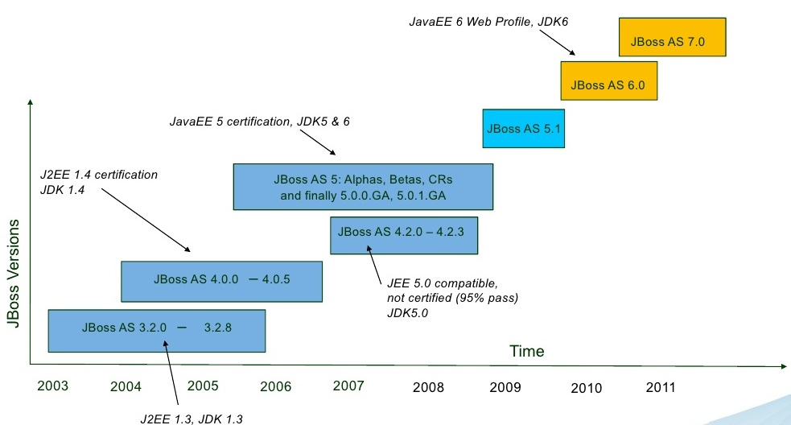
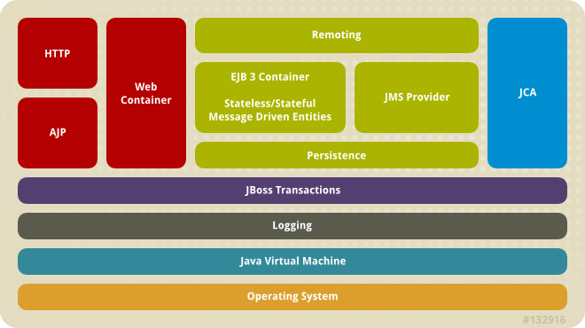
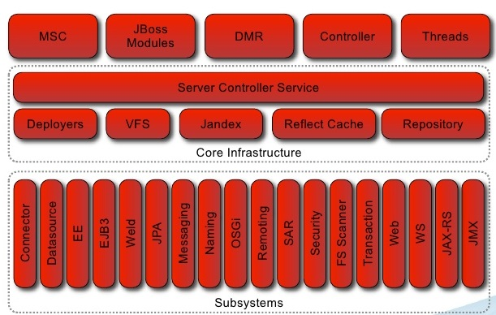
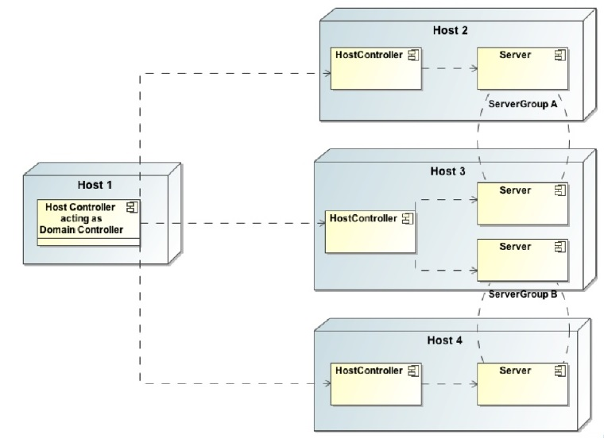
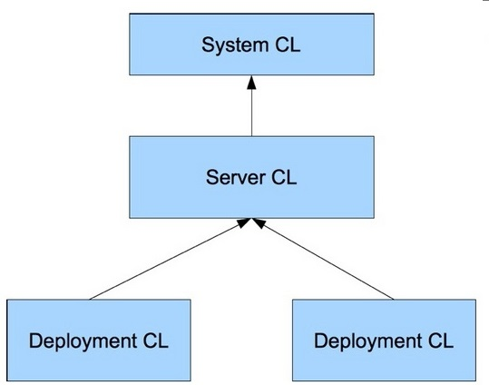
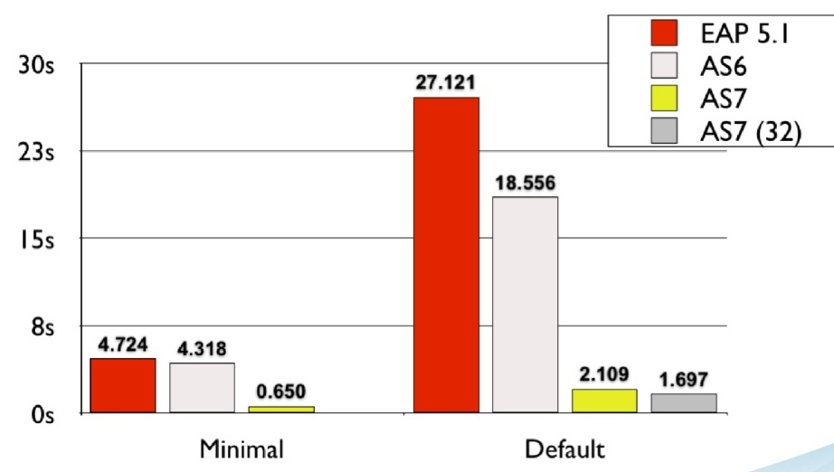
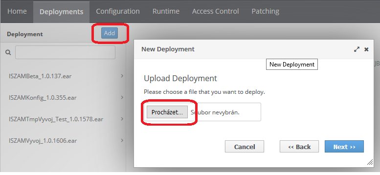

## JBoss #### Concept & Usage Created by [Arnošt Havelka](http://cz.linkedin.com/in/arnosthavelka/)
## Agenda 1. Overview 1. Deployment methods 1. Deployment descriptors <p><small>See: presentation <a href="https://www.slideshare.net/rayploski/jboss-application-server-7">JBoss 7</a></small></p>
## 1. Overview 1. History 1. Architecture 1. Modes (standalone vs.domain) 1. Domain model 1. File layout 1. Class loading 1. Performance 1. Standards
1.1 History

1.2 Architecture [1/2]

1.2 Architecture [1/2]

## 1.3 Modes 1. **Standalone** - Single JVM server - Managed from JVM server itself 1. **Domain** - Multi JVM model (multiple JVMs) - Managed from Domain Controller (single point) - Three separate processes: - Process Controller (starting servers) - Host Controller (pushing out the configuration changes over the domain) - Server Instance (JVM)
1.4 Domain model

1.5 File layout - Standalone
1.5 File layout - Domain
1.6 Class Loading

1.7 Perf - Boot Time

1.7 Perf - Memory Usage
## 1.8 Standards | Specification | JBoss EAP 6 | JBoss EAP 7 | | ------------- | ------------- | ------------- | | JBoss EAP 6 | 6.0 | 7.0 | | Java Servlet | 3.0 | 3.1 | | JSP & EL | 2.2 | 2.3 | | JTA | 1.1 | 1.2 | | EJB | 2.0-3.1 | 2.0-3.2 | | JPA | 2.0 | 2.1 | | Bean Validation | 1.0 | 1.1 | <p><small>See: <a href="https://access.redhat.com/articles/113373">JBoss Standards</a></small></p>
## 2. Deployment methods 1. Hotdeploy 1. JBoss Console 1. JBoss CLI 1. Maven plugin
## 2.1 Hotdeploy Simply put the deployable artifact (WAR/EAR) to this folder (for the standalone mode): __`<JBOSS_HOME>`\standalone\deployments__
2.2 JBoss Console

## 2.3 JBoss CLI Run in folder `<JBOSS_HOME>`\bin: <p><small>jboss-cli.bat --connect --controller=localhost:9990 --user=admin --password=admin "ls deployment"</small></p> Result: ``` ISZAMBeta_1.0.137.ear ... ISZAMVyvoj_1.0.1606.ear Press any key to continue ... ``` <p><small>See: <a href="http://middlewaremagic.com/jboss/?p=419">Connect command</a></small></p>
### 2.4 Maven plugin Definition (in pom.xml): ``` <plugin> <groupId>org.wildfly.plugins</groupId> <artifactId>wildfly-maven-plugin</artifactId> <version>1.2.0.Final</version> <configuration> <serverId>wildfly-as</serverId> <hostname>localhost</hostname> <username>admin</username> <password>admin</password> </configuration> </plugin> ```
### 2.4 Maven plugin Goals: * wildfly:deploy * wildfly:undeploy Usage: <p><small>http://localhost:8080/zam-jboss-maven-plugin-0.0.1-SNAPSHOT/greeting?name=aha</small></p> <p><small>See: <a href="https://docs.jboss.org/wildfly/plugins/maven/latest/plugin-info.html#">Plugin goals</a></small></p>
## 3. Deployment descriptors 1. standalone.xml 1. jboss-web.xml 1. jboss-deployment-structure.xml
### 3.1 standalone.xml Binding value via JNDI: ``` <subsystem xmlns="urn:jboss:domain:naming:2.0"> <bindings> <simple name="java:global/url/Configuration" value="file:///data/config/wildfly-services-1.0" type="java.net.URL"/> </bindings> </subsys ``` Usage: ``` @Resource(lookup="java:global/url/Configuration") private URL configuration; ```
### 3.2 jboss-web.xml ``` <?xml version="1.0" encoding="UTF-8"?> <jboss-web> <context-root>zam-jboss-maven-plugin</context-root> </jboss-web> ``` D:\work\atos\iszam\src\pokusy\zam-jboss-maven-plugin <p><small>See: <a href="https://developer.jboss.org/wiki/HowDoIOverrideTheWebContextRoot">this</a> or project **pokusy\zam-jboss-maven-plugin** (in SVN)</small></p>
### 3.3 jboss-deployment-structure.xml ``` <jboss-deployment-structure> <deployment> <dependencies> <module name="org.springframework.spring" slot="3.2.3" export="true"> <imports> <include path="META-INF**" /> <include path="**" /> </imports> <exports> <include path="META-INF**" /> <include path="**" /> </exports> </module> <module name="org.apache.commons.beanutils" export="true" /> <module name="org.apache.commons.collections" export="true" /> ```
THE END
Thank you!